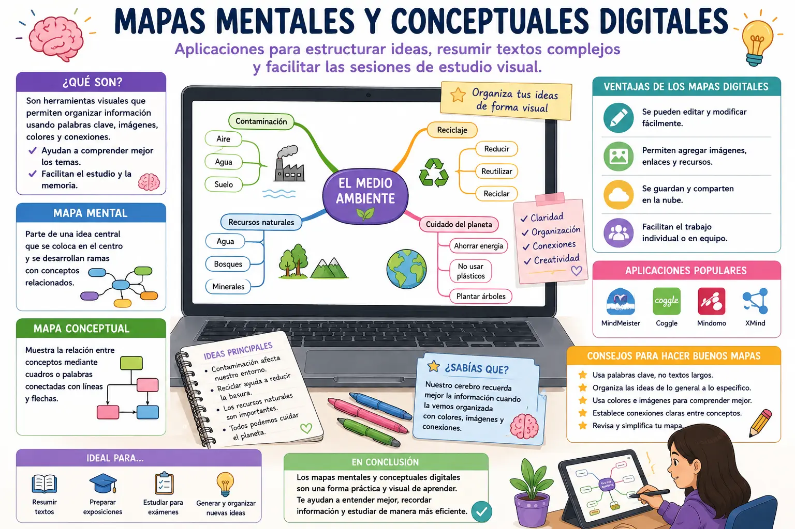

Mapas mentales y conceptuales digitales
Los mapas mentales y conceptuales digitales son herramientas que permiten organizar información de una manera visual y sencilla. En lugar de escribir grandes cantidades de texto, se pueden utilizar palabras clave, imágenes, líneas, cuadros y diferentes conexiones para representar las ideas principales de un tema. Estas herramientas son especialmente útiles para estudiar y comprender información que puede resultar complicada.
Los mapas mentales parten de una idea principal que se coloca normalmente en el centro. A partir de ella se crean diferentes ramas que contienen conceptos relacionados. Por ejemplo, si el tema principal es "El medio ambiente", las ramas pueden incluir contaminación, reciclaje, recursos naturales y cuidado del planeta. De esta manera, la información queda organizada de una forma que facilita recordar los conceptos.
Por otro lado, los mapas conceptuales muestran la relación que existe entre diferentes conceptos. Suelen utilizar cuadros o palabras conectadas mediante líneas y flechas. Esta organización permite explicar cómo una idea se relaciona con otra y ayuda a comprender mejor un tema. Son útiles para resumir capítulos, preparar exposiciones y estudiar antes de una evaluación.
Una de las principales ventajas de realizar estos mapas de manera digital es que se pueden modificar fácilmente. Si el estudiante encuentra nueva información o necesita corregir una idea, puede mover los elementos, agregar conceptos o eliminar aquellos que ya no sean necesarios. Además, algunas aplicaciones permiten incorporar imágenes, enlaces y otros recursos que complementan la información.
Los mapas digitales también pueden ayudar a resumir textos complejos. Después de leer un texto, el estudiante puede identificar las ideas principales y colocarlas en un mapa utilizando palabras clave. Este proceso obliga a analizar la información y distinguir lo más importante de los detalles secundarios. Por esta razón, elaborar el mapa puede convertirse en una forma de estudiar y no solamente en una manera de presentar información.
Otra ventaja es que facilitan el estudio visual. Algunas personas recuerdan mejor la información cuando pueden observarla organizada mediante colores, formas, imágenes y conexiones. Un mapa bien elaborado permite tener una visión general del tema sin necesidad de volver a leer todo el contenido. También puede utilizarse como guía para recordar los puntos principales antes de una exposición o examen.
Para obtener buenos resultados, es importante no llenar el mapa con demasiada información. Lo recomendable es utilizar palabras o frases cortas y organizar los conceptos de forma ordenada. También se deben establecer conexiones que tengan sentido y utilizar imágenes o colores únicamente cuando ayuden a comprender mejor el contenido. De esta manera, el mapa será fácil de leer y realmente servirá como apoyo para el estudio.
En conclusión, los mapas mentales y conceptuales digitales son herramientas que ayudan a organizar, resumir y comprender diferentes tipos de información. Su uso permite desarrollar la capacidad de identificar ideas principales, establecer relaciones entre conceptos y estudiar de una manera más visual. Cuando se utilizan correctamente, pueden facilitar el aprendizaje y convertirse en un recurso práctico para preparar tareas, exposiciones y evaluaciones.
